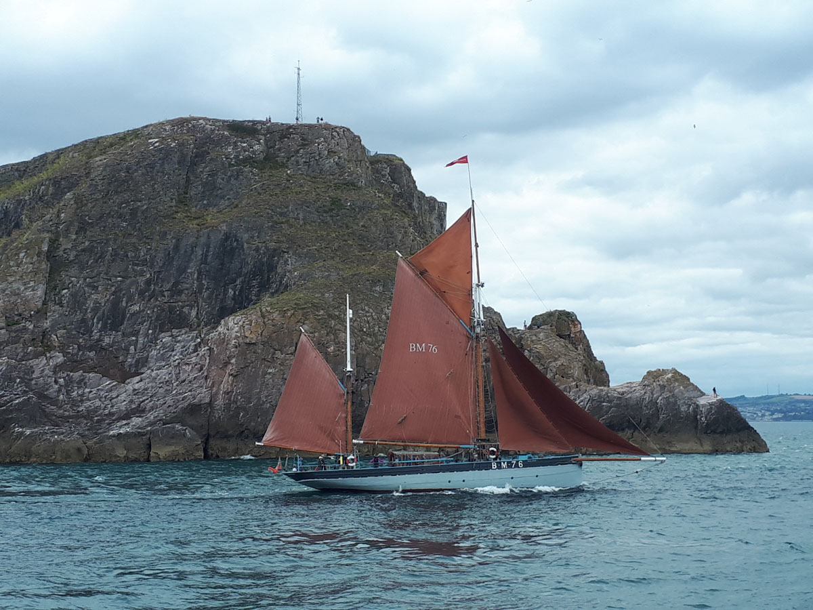
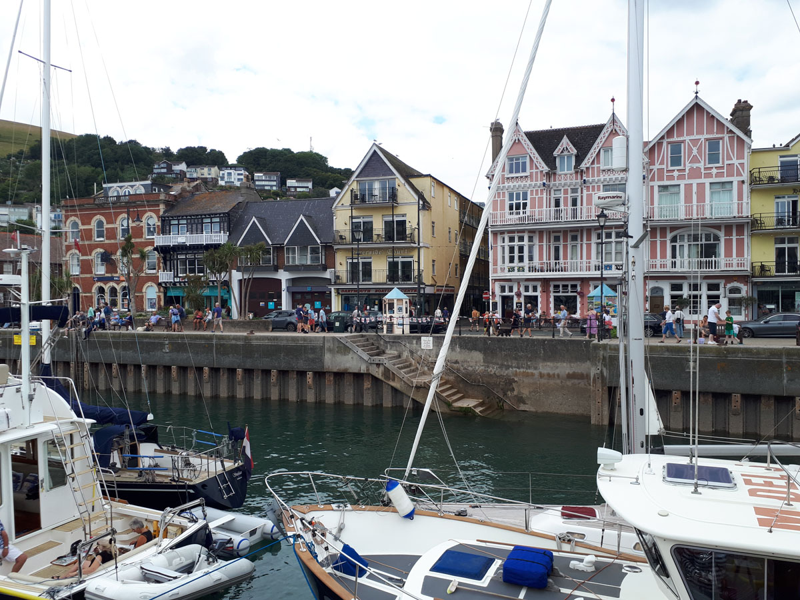
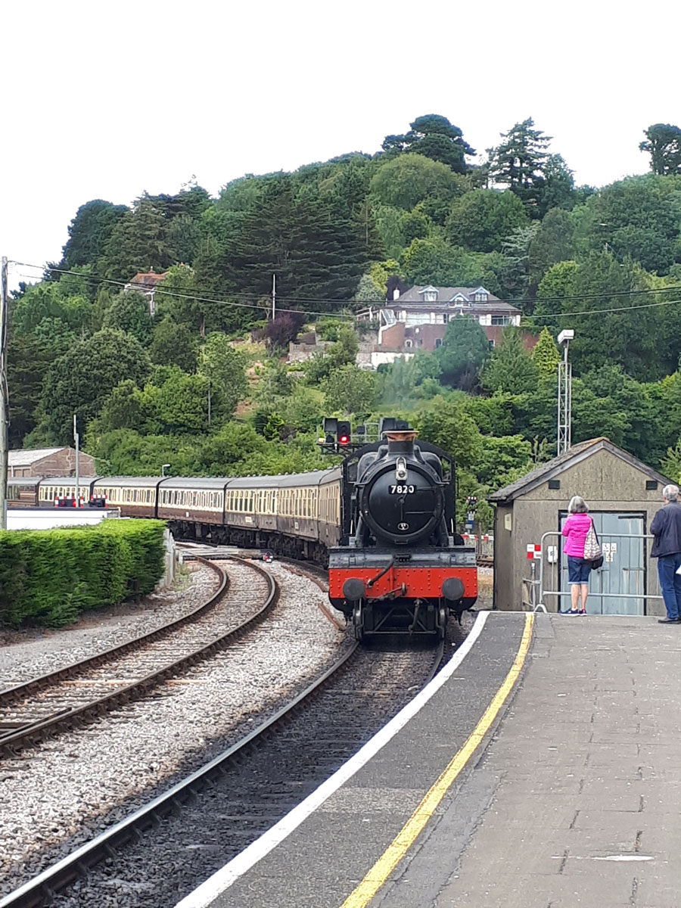
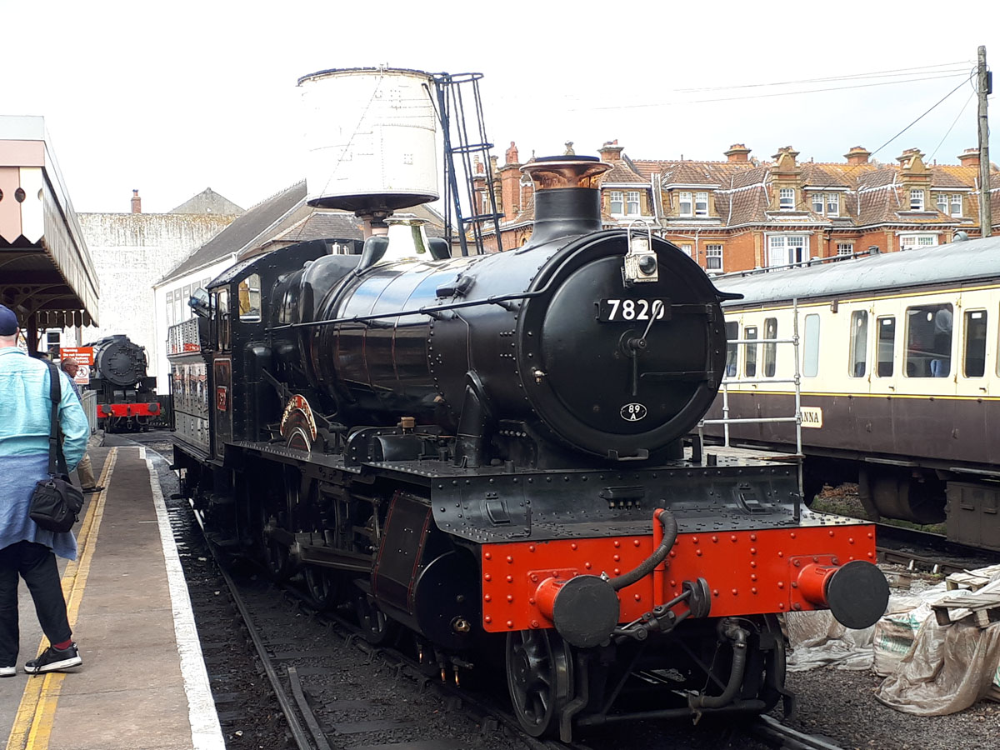

Dartmouth
Eine interessante Rundtour mit verschiedenen Verkehrsmitteln: Mit dem Schiff fahren sie von Brixham der schönen Küste entlang bis nach Dartmouth. Das hübsche Städtchen liegt, wie der Name schon sagt, an der Mündung des River Dart. Es hat hübsche Gassen,
die noch aus dem Mittelalter stammen. Von hier nehmen sie die Fähre über den Dart Estuary nach Kingswear, wo bereits die Dampfeisenbahn wartet. Mit der Steam Railway fahren sie nach Paignton, von wo es noch eine kurze Busfahrt zurück nach Brixham
ist.
